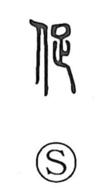

促

Uncategorized
Kun: unagasu | On: soku
to urge ・ to hasten ・ to press ・ to prompt
Explanation
A phono-semantic character combining the person radical 亻 with the phonetic 足. 足 provides the on-reading soku and conjures the image of closing in from behind; early lexica already gloss it as semaru, “to press/approach.” From this sense of coming up on someone’s back, the character took on the meanings “to urge,” “to press,” and “to hurry,” as reflected in usages such as sokusoku, describing a hurried state.